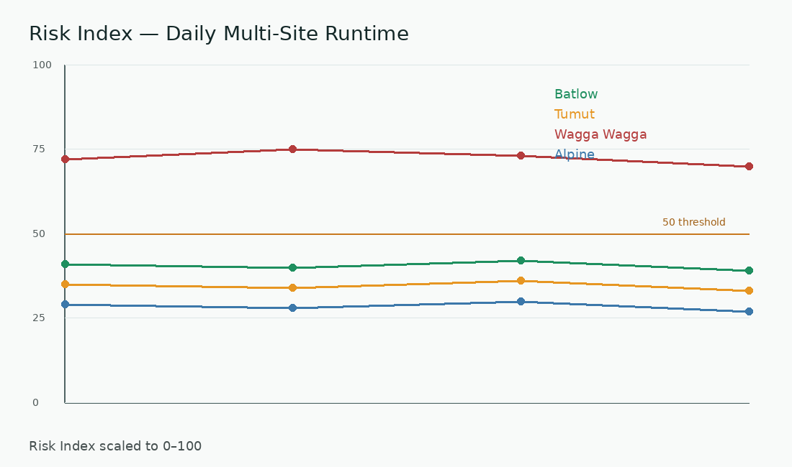
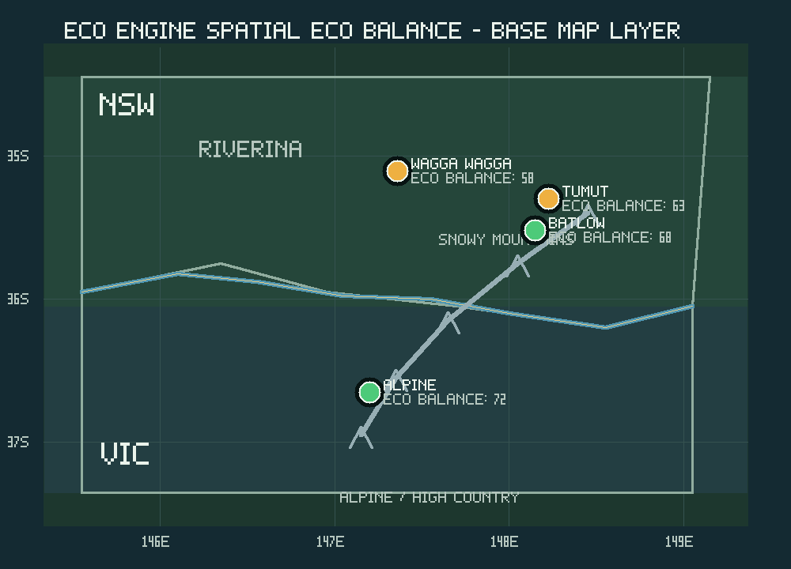

Eco Balance Lifeline
Longitudinal ecological balance movement over time.

Risk Index Chart
Runtime ecological risk observation.

Spatial Ecological Surface
Spatial Eco Balance distribution across selected observation sites.

Spatial Runtime Animation
Ecological drift movement through accumulated runtime frames.
Eco Balance Threshold Lens
Move the threshold to explore ecological balance interpretation bands.
Fragile Balance
- 0–20 Severe Arid Risk
- 20–35 Arid Pressure
- 35–50 Semi-Arid Warning
- 50–65 Fragile Balance
- 65–80 Stable Recovery
- 80–100 Strong Ecological Resilience
Runtime Interpretation Prompt
Copy a human-readable interpretation request for reviewing current visual outputs.
Prompt ready.
What This Demo Shows
This public page shows an early interface for observing regional ecological signals, not a validated field decision tool.
The live research direction may later integrate LoRa sensor data, terrain-scale microclimate observations, spatial interpolation, watershed modelling, and ESG++ governance logic.
Prototype Scope
Current visual indicators are exploratory and intended for communication.
RESEARCH Regional ecological runtime observation
LIMITATION Not for operational environmental decision-making
DIRECTION Future ESG++ and sensor integration pathway